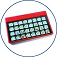

Index
This list of products is for reference purposes only and does not reflect endorsement by the IDRC.
Description
Voice Output Communication Aids (VOCA)/ Speech Generating Devices (SGD) are electronic devices that are able to generate printed and/or spoken text. VOCA aid individuals who are unable to use natural speech to meet all of their communication needs. There are many different products available. Some products are dedicated for communication purposes only while others are software programs in lap-top computer systems. Some have additional features built in such as appointment schedules and reminders, simple environmental control units, alternative access methods, dual displays, and abbreviation expansion programs.
Points to ponder - Questions to consider when shopping for a Voice Output Communication Aid
- Is it a piece of software or separate hardware?
- Is the communication aid used via direct (touching with a body part) or indirect selection (a joystick, for instance)?
- Does it offer both text and symbols, for the benefit of those who can't read?
- Does it have a dynamic or a static display?
- Can it be used for both simple and complex use?
- Does it provide feedback (whether it be tactile, visual or auditory)?
Communication Aids
- Prentke Romich International has a number of augmentative communication products including:
- ChatBox and ChatBox DX are products designed as a communication tool with the DX model adding features for people who have visual disabilities or motor skill issues
- Pathfinder Plus Comes set up with vocabulary, pictures and sounds
- Zygo Industries
- Optimist II - [from their web page] "direct selection on an 8.4 inch screen or scanning using the dynamic display, light weight, and its audio amplifier/speaker module provides exceptionally loud, clear output"
- Polyana - [from their web site] "pocket Windows CE device, small and lightweight, are instant-on, the unit is always in standby, have long battery life on each charge and are relatively inexpensive., modified for AAC use"
- Words +
- Makers of TuffTalker - "Finger touch screen, rugged magnesium case, shock-mounted hard drive, spill-resistant LCD" [from their web pae]
- Freedom 2000 ToughBook - [from their web page] "Now with a Pentium III 500MHz Processor, a 10GB hard drive, magnesium-alloy protected LCD display, shock-mounted components, 3-Year Warranty, multiple-access modes, E Z Keys and Talking Screen, Windows Operating System
- Also a Freedom 2000 Extreme machine or a Freedom 2000 Lite version available
- Intellitools
- IntelliKeys, "the keyboard with the changing face", IntelliTalk II (text-to-speech software), IntelliPics (interactive creativity tool for teachers, parents or students), Overlay Maker for use with IntelliKeys, (solutions for switch users), or Intellitools Math are just some of the products
- Mayer-Johnson Company
- MagicTouch Screens - mounts on your computer monitor to give you touch access to functions on the screen [ie: moving objects] - the Kidmark version of this is more durable for those who tend to hit rather than touch
- Adaptivation Has a communication catalog page which includes:
- Chipper - [from their web site] "Play pre-recorded messages with a touch of the Chipper's surface or connect an external switch, message length of 20 seconds, relay/switch output capabilities for cause effect skill building, external switch jack and adjustable volume, the Chipper comes with a black base and is available in five colors-red, yellow, green, blue, and purple, threaded base (large triangle pattern) makes the Chipper extremely easy to mount to Adaptivation's Magic Arm or other mounting systems
- Sequencer - [from their web page] "This device will allow the user to have a series of messages. You can record as many phrases as needed up to 60 second maximum. Pressing the switch once causes message 1 to play. Pressing it again activates message 2, then 3, and so on. This allows individuals to carry on a conversation with a single switch. It also works well for reading a story, conducting a class report, or participating in a school play,.
- VoicePal 8, 8k and VoicePal Levels - lightweight, customizable personal communication aid, both can adapt to the growing skills of the user
- Able Net, Inc
- Has a communication catalog page which includes the BigMack, Quick Start Communicator, Talk Trac, and SpeakEasy Communicator
- Dynavox Technologies
- Dynavox and its' sister company Mayer-Johnson offer a broad range of communication aid solutions.
- The Great Talking Box Company
-
Manufacturers affordable dedicated hardware and software based communication aids as well as accessories and mounting systems.
Hand-Held Communication Aids
- Words +, Inc.
- MessageMate - [from their web page] "Easy to use, available with a variety of Levels and recording times, durable construction, long-lasting battery, keyboard or switch operation, scanning capability, simple to record
- Accessories include: keyguards, carrying case, Mayer-Johnson PCS stickers, Imaginart Pick N' Stick stickers, or an extra AC adaptor
- QuickPage - [from their web page] "ready-made communication displays in a convenient, easy-to-use software program., provides customized communication displays, organizes language, builds phrases quickly, helps develop literacy skills, encourages social interaction"
- Mayer-Johnson Company
- Hand-Held Voice - [from their web page]" Custom communication boards are dynamically linked., recorded speech with good volume, Base unit has 8 minutes of recording - 24 expansion card, rugged, lightweight and compact (1.5 lbs - .68 kg), touchscreen-only a light touch required, monochrome LCD provides excellent clarity, runs for weeks on AA batteries"
- Crestwood Communication Aids offers Talking Pictures and Crespeaker (which Crestwood no longer directly sells) but is still available.
- Saltillo
- ChatPC - [from their web site] "ChatPC combines the latest in electronic technology with ease of use and powerful language capabilities. Built upon a new Casio EM-500 PocketPC computer, ChatPC offers a brilliant, color dynamic display along with both synthesized and digitized speech output. ChatPC is the product of a collaborative effort between Saltillo Corporation and Enkidu Research, Inc. "
- ChatBox - [from their web site] "ChatBox and ChatBox-DX, voice output communication devices, combine the use of meaningful pictorial images with the latest technology to enable people who cannot speak to communicate easily and quickly with their families, friends and others. The newly enhanced ChatBox is designed for use by any individual who experiences cognitive and language limitations, brain disorders, cerebral palsy or conditions that result in temporary loss of speech. The addition of a deluxe model, ChatBox-DX, opens up a world of capabilities to individuals with visual difficulty or very poor motor skills."
- VocaFlex - [from their web site] "With an hour of recorded speech capacity, 51 overlays can be stored into VocaFlex at once. The overlays have bar-codes that are read by VocaFlex. When a different overlay is placed on the device, the VocaFlex automatically changes the keyboard configuration and vocabulary to match the overlay."
- Other communication aids on the Saltillo site
Mobile Phone Based Devices
- Proloquo2Go - distributed by AssistiveWare is an application that can be downloaded for the iPhone.
- Speak it! - a text to speech application for the iPhone.
Resources
- AAC Terminology - by the Barkley Augmentative and Alternative Communication Center
- AAC Glossary - from Augmentative and Alternative Communication, Second Edition, by David R. Beukelman, Ph.D., and Pat Mirenda, Ph.D.
- AAC Resources - includes organizations and manufacturer information
- The ACE Centre [Aiding Communication in Education - North] - serving North England, North Ireland and North Wales, e-mail: This email address is being protected from spambots. You need JavaScript enabled to view it.
- More specifically, the ACE Centre's VOCA information page will help you select and order a VOCA.